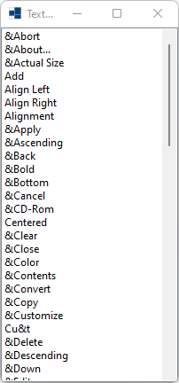
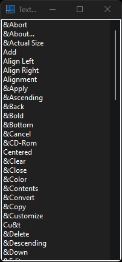
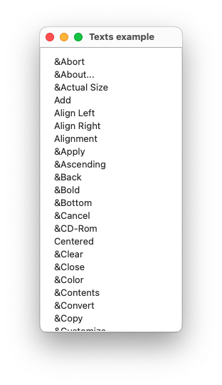
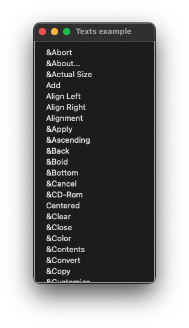
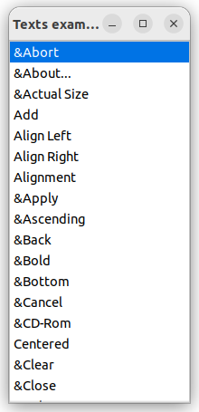
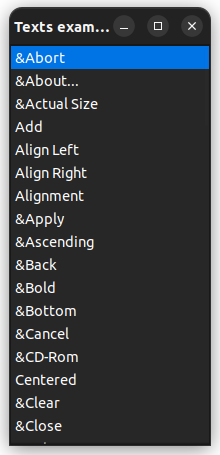

|
xtd
0.2.0
|
Loading...
Searching...
No Matches
texts.cpp
demonstrates the use of xtd::drawing::texts strings.
- Windows
- 

- macOS
- 

- Gnome
- 

#include <xtd/drawing/texts>
#include <xtd/forms/application>
#include <xtd/forms/form>
#include <xtd/forms/list_box>
#include <xtd/forms/message_box>
using namespace std;
using namespace xtd;
using namespace xtd::drawing;
using namespace xtd::forms;
public:
form1() {
text("Texts example");
client_size({200, 400});
*this << list_box_texts;
list_box_texts.dock(dock_style::fill);
list_box_texts.items().push_back_range({texts::abort(), texts::about(), texts::actual_size(), texts::add(), texts::align_left(), texts::align_right(), texts::alignment(), texts::apply(), texts::ascending(), texts::back(), texts::bold(), texts::bottom(), texts::cancel(), texts::cdrom(), texts::centered(), texts::clear(), texts::close(), texts::color(), texts::contents(), texts::convert(), texts::copy(), texts::customize(), texts::cut(), texts::del(), texts::descending(), texts::down(), texts::edit(), texts::execute(), texts::file(), texts::find(), texts::first(), texts::floppy(), texts::font(), texts::forward(), texts::harddisk(), texts::help(), texts::home(), texts::ignore(), texts::indent(), texts::index(), texts::info(), texts::italic(), texts::jump_to(), texts::justified(), texts::last(), texts::network(), texts::new_(), texts::no(), texts::ok(), texts::open(), texts::options(), texts::paste(), texts::preferences(), texts::print(), texts::print_preview(), texts::properties(), texts::quit(), texts::redo(), texts::refresh(), texts::remove(), texts::replace(), texts::retry(), texts::revert_to_saved(), texts::save(), texts::save_as(), texts::search(), texts::select_all(), texts::spell_check(), texts::stop(), texts::strikeout(), texts::tools(), texts::top(), texts::undelete(), texts::underline(), texts::undo(), texts::unindent(), texts::up(), texts::view(), texts::yes(), texts::zoom_in(), texts::zoom_out(), texts::zoom_to_fit()});
}
private:
list_box list_box_texts;
};
auto main()->int {
try {
//locale::global(locale {"fr_FR.utf-8"});
locale::global(locale {"zh_CN.utf-8"});
} catch (const std::exception& e) {
message_box::show(ustring::format("Make sure specified locale is installed on your system :\n\n{}", e.what()), "Exception");
return -1;
}
application::run(form1 {});
}
Represents a window or dialog box that makes up an application's user interface.
Definition form.h:52
The xtd::drawing namespace provides access to GDI+ basic graphics functionality. More advanced functi...
Definition actions_system_images.h:11
The xtd::forms namespace contains classes for creating Windows-based applications that take full adva...
Definition xtd_about_box.h:12
The xtd namespace contains all fundamental classes to access Hardware, Os, System,...
Definition xtd_about_box.h:10
Generated on Fri Apr 5 2024 22:03:11 for xtd by Gammasoft. All rights reserved.